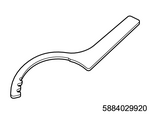
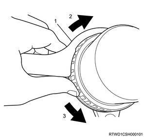
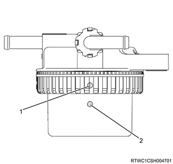

Pre-fuel filter element installation (4JK1)
1. Pre-fuel filter element installation
Note
- The following applies to specifications with a pre-fuel filter.
Caution
- When replacing the pre-fuel filter element, replace the fuel filter element at the same time.
1. Install the pre-fuel filter element to the pre-fuel filter.
Caution
- After installing the pre-fuel filter element to the pre-fuel filter, verify that the O-ring is securely inserted into the groove of the pre-fuel filter.
- If the O-ring is misaligned with the groove of the pre-fuel filter, foreign material may enter the fuel system and the engine may be damaged.
2. Install the element case to the pre-fuel filter using special tool.

SST: 5-8840-2992-0 - FUEL FILTER WRENCH

- Fuel filter wrench
- Close
- Open
Note
- Align the position of the union side alignment mark and the element case side alignment mark as shown in the diagram.

- Union side alignment mark
- Element case side alignment mark
2. Fuel air bleed
1. Press the priming pump.
Note
- Press the priming pump until it gets stiff.

- Priming pump
- Fuel filter with the sedimenter
Caution
- Insufficient air removal work may lead to malfunction of the engine.